Kibana Guide: Time Series Charts in Lens
|
This content was generated with the assistance of AI and should be verified against the official documentation before being relied on in production. |
Checked on 2026-11-11 against Kibana 9.5.x.
What you build
You add three Lens panels to the dashboard Bookshelf (guides). The first one draws the Bookshelf requests per minute as lines, one for each URI with the rest grouped as Other, next to a copy of the total shifted in time, a reference line and an annotation. The second one draws the 95th percentile of the latency from the traces. The third one draws the error ratio, computed by a formula and shown as a percentage.
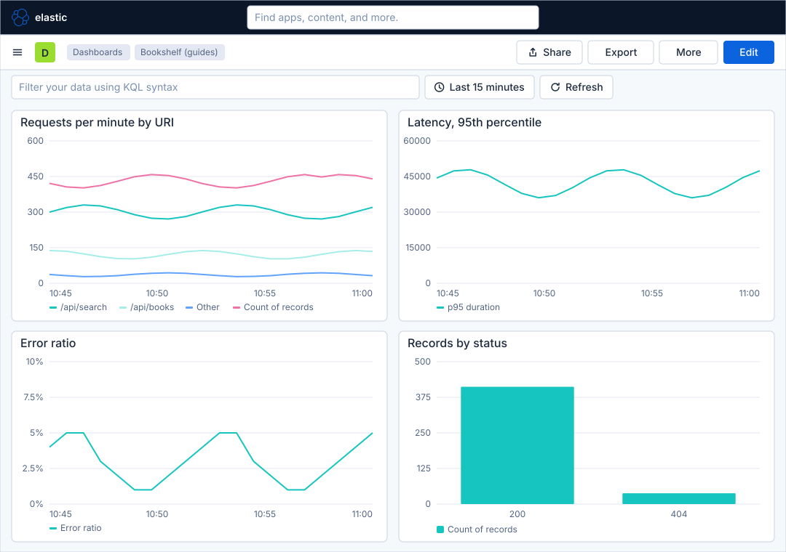
Before you start
-
Start the Kibana profile of the hands-on lab and wait about a minute:
cd lab docker compose --profile kibana up -d -
Open http://localhost:5601 and sign in as
elasticwith the passwordlab-elastic-password. When Kibana opens its full-screen welcome page, click Explore on my own. -
Do the previous guide, Create a dashboard and the first Lens panel. It creates the dashboard Bookshelf (guides) and the data view Bookshelf logs (guides) (index pattern
logs-generic.otel-default, time field@timestamp) comes from Upload a file and create a data view. -
The percentiles need a second data view for the traces. In Stack Management, open Data Views, click Create data view, type the Name
Bookshelf traces (guides), the Index patterntraces-generic.otel-defaultand the Timestamp field@timestamp, and click Save data view to Kibana. -
The load generator must run in its default mode, which feeds both the logs and the traces. Lens and dashboards need no licence beyond the basic one; the lab runs a trial licence anyway.
-
The guide was checked on Elasticsearch and Kibana 9.5.6. The figures are drawings of the Kibana 9.5 user interface, not screenshots, so small details can differ from your screen, and the numbers in the charts are only illustrations. A highlighted box with a number marks the control of the step with the same number. The dimension editors, the chart type menu, the Add layer menu and their settings were not all opened one by one in the lab for this guide; the figures show them in general form and the steps name the controls without describing their exact layout.
Steps
The Lens editor is the same as in the first guide: the field list at the left, the workspace in the middle and the configuration panel with the layers at the right. The map of the editor is in Create a dashboard and the first Lens panel; the figures below show the parts that this guide uses.
Open Lens from the dashboard
-
Open the primary navigation with the menu button, click Dashboards under Analytics, and click Bookshelf (guides).
-
Click Edit in the second bar.
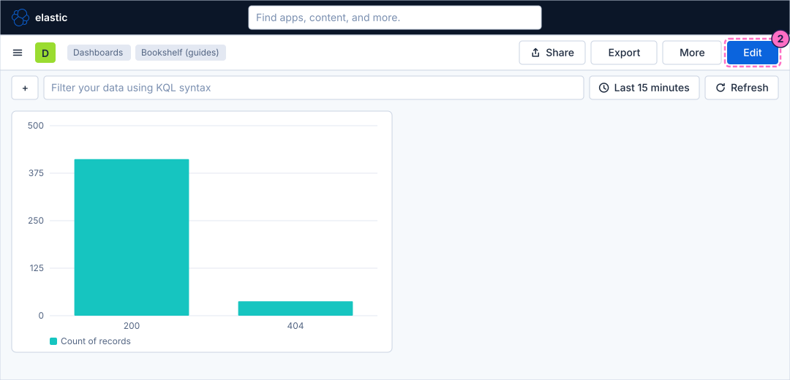
-
Click Add in the second bar.
-
In the Add to dashboard flyout, click Visualization.
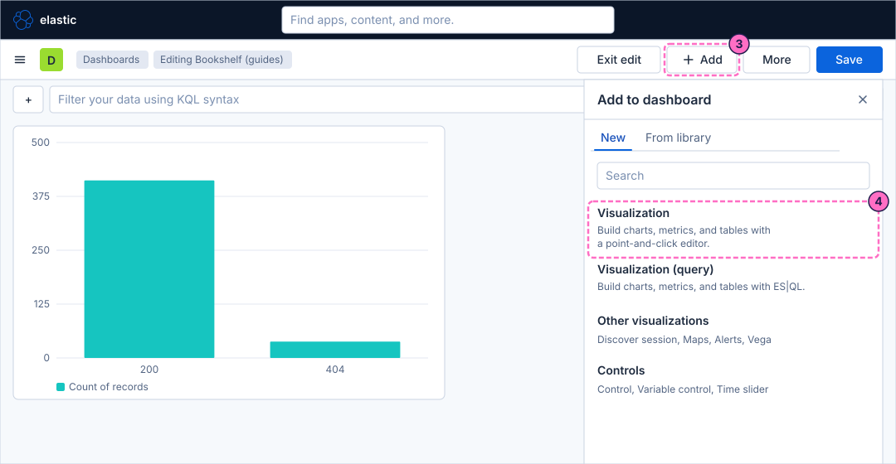
Draw lines, areas and bars over time
-
Lens opens with an empty workspace. Check that the Data view picker shows Bookshelf logs (guides), then click the chart type button of the layer, which shows Bar, and choose Line.
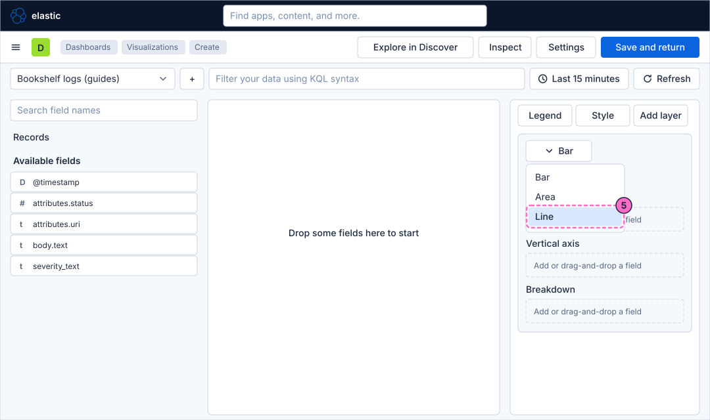
-
Drag the field
@timestampfrom the field list onto the dashed Horizontal axis button. Lens fills the axis with a date histogram. -
Drag the entry Records, above Available fields, onto the dashed Vertical axis button. Lens shows it as Count of records.
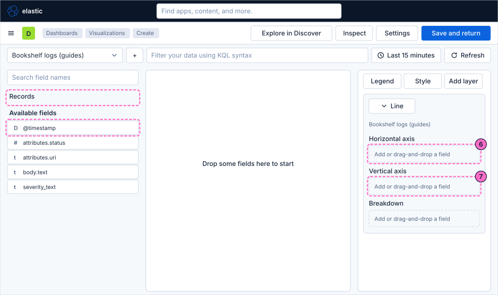
-
The workspace draws the count of records over time as one line. Click the chart type button again and choose Area. The same data is now filled below the line.
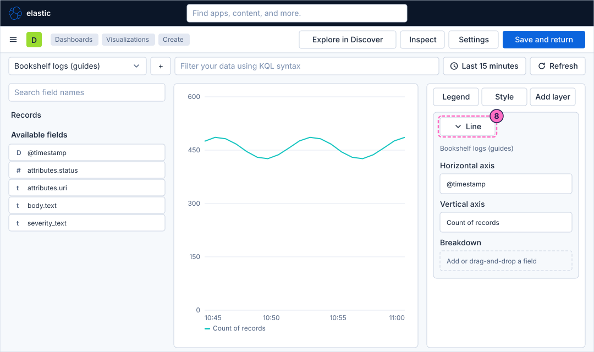
-
Click the chart type button and choose Bar. Compare the three shapes: a line follows a value, an area stresses the volume, bars show each interval as a separate amount.
-
Click the chart type button and choose Line again. The rest of the guide uses lines.
Set the date histogram interval
-
Click the Horizontal axis entry
@timestampto open its editor. Its function is the date histogram. -
In the editor, set the interval to
1 minute. A short interval draws more points and a noisier line, a long interval smooths the line but hides short peaks; with Last 15 minutes in the time picker, one minute is a good size.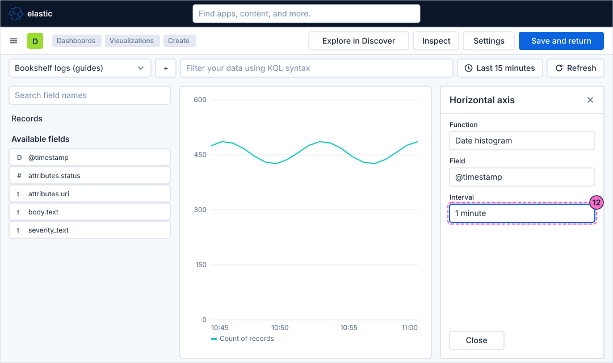
-
Close the editor.
Break the line down by URI
-
Drag the field
attributes.urionto the dashed Breakdown button.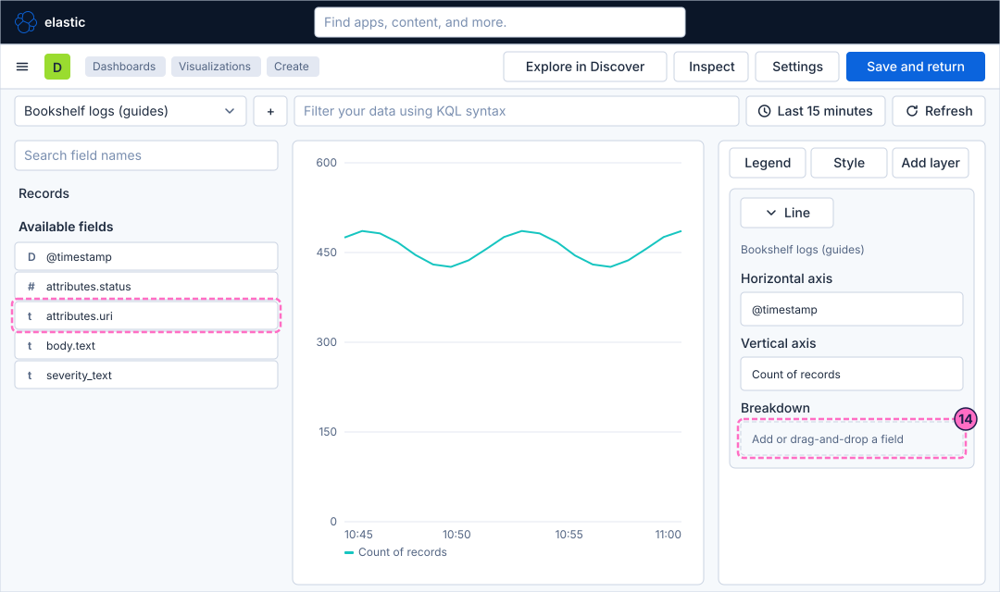
-
Click the new Breakdown entry to open its editor. The function is Top values: one line for each of the most frequent values of the field.
-
Set the number of values to
2, so that only the two busiest URIs get a line. -
Turn on the switch for the group Other, so that the requests of all the remaining URIs are added together as one more line called Other.
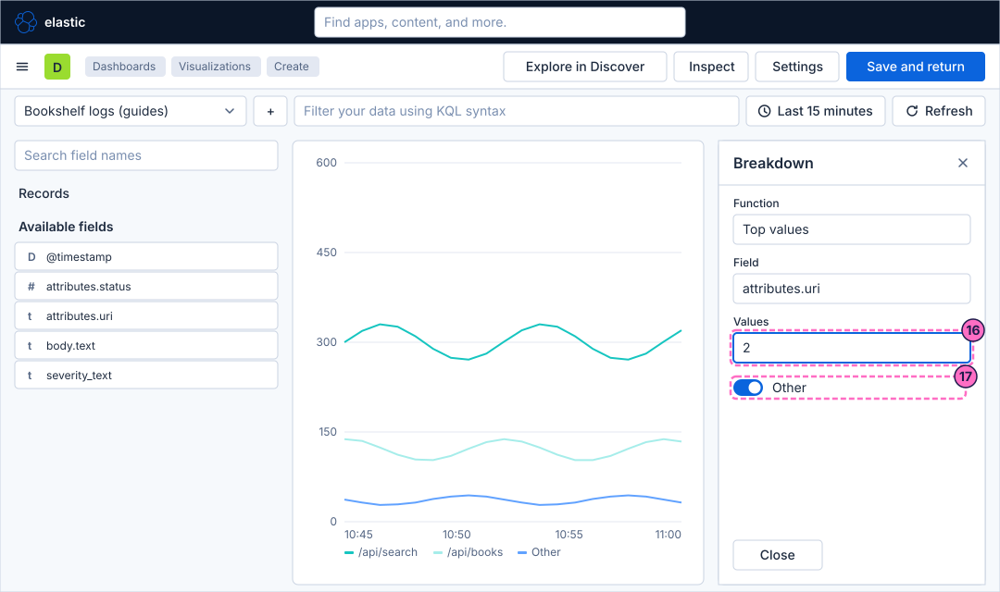
-
Close the editor.
Add a second layer, reference lines and an annotation
A layer is one set of axes of its own inside the same chart. Reference lines and annotations are layers too.
-
Click Add layer at the top of the configuration panel.
-
Choose the entry for a data layer.
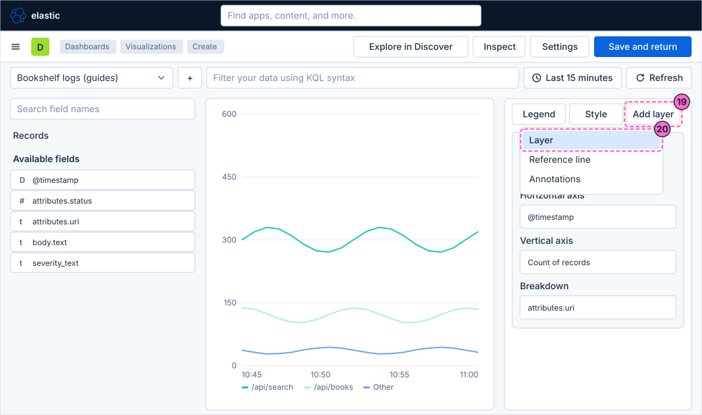
-
In the new layer, drag
@timestamponto its dashed Horizontal axis button. -
Drag Records onto its dashed Vertical axis button.
-
Click the new Vertical axis entry, Count of records, to open its editor.
-
In the editor, type
10min the Time shift control. The layer now draws the total number of requests as it was ten minutes earlier, so you can compare it with the present lines. In a lab that has run for weeks,1wcompares with the same time a week earlier.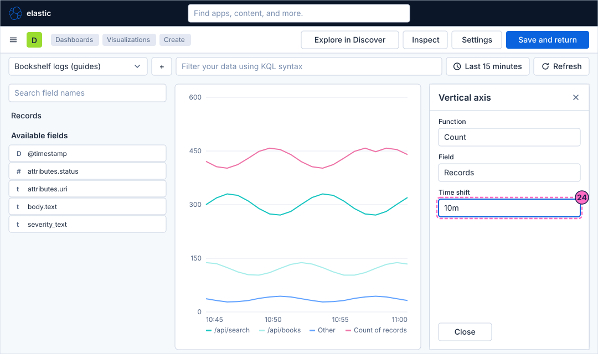
-
Close the editor, click Add layer again and choose the entry for a reference line.
-
In the editor of the reference line, select the Static value tab and type
500, the number of requests per minute that you do not want to exceed.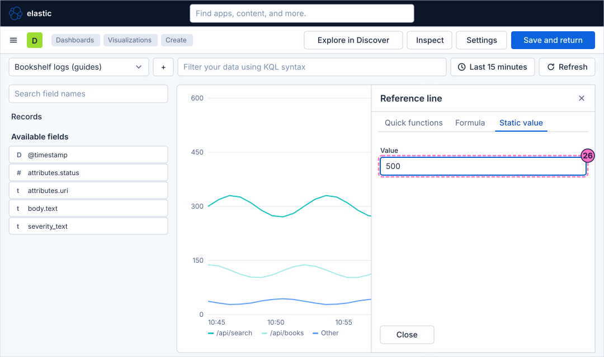
-
To draw the average instead of a fixed number, close the editor, add another reference line, open its Formula tab and type:
overall_average(count()) -
Click Add layer once more and choose the entry for annotations.
-
In the editor of the annotation, type
failing mode onin the Label control. -
Set the Time control to the moment the annotation marks, for example the minute when you will switch the load generator to its failing mode in the check below.
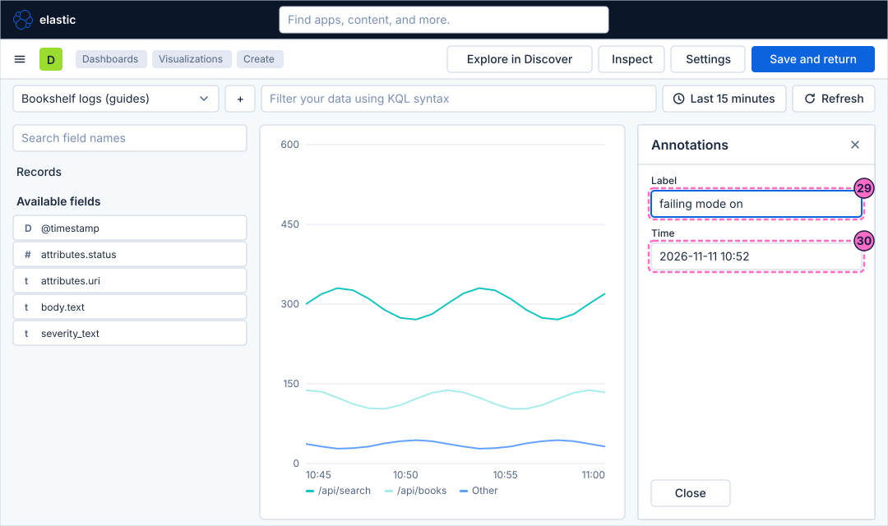
-
Click Save and return in the second bar.
Draw percentiles of the latency
The logs have no duration, but the traces do, so this panel uses the second data view.
-
Back on the dashboard, click Add and then Visualization.
-
In Lens, choose the chart type Line.
-
Open the Data view picker and choose Bookshelf traces (guides).
-
Drag
@timestamponto the dashed Horizontal axis button. -
Drag the field
attributes.transaction.duration.us, the duration of the transactions in microseconds, onto the dashed Vertical axis button. -
Click the new Vertical axis entry and choose the function Percentile for the field.
-
Type
95as the percentile. Typep95 of duration.usin the name control if you want the short label of the figure. The line shows the duration below which 95 percent of the transactions finish. Add the 50th percentile and the 99th in the same way if you want to compare the typical and the worst cases.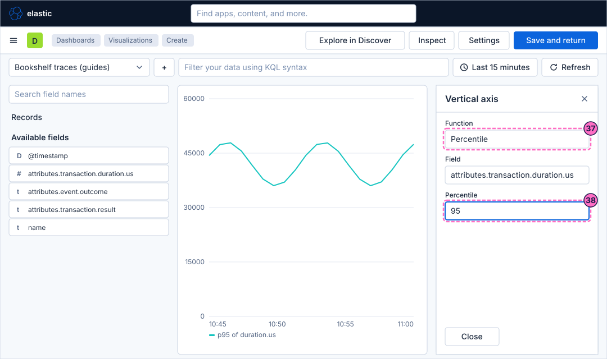
-
Close the editor and click Save and return.
Compute the error ratio with a formula
-
Click Add and then Visualization once more.
-
In Lens, choose the chart type Line and open the Data view picker to choose Bookshelf logs (guides) again.
-
Drag
@timestamponto the dashed Horizontal axis button. -
Click the dashed Vertical axis button and open the Formula tab of its editor.
-
Type the formula that divides the number of log records with the severity
ERRORby the number of all records:count(kql='severity_text : "ERROR"') / count()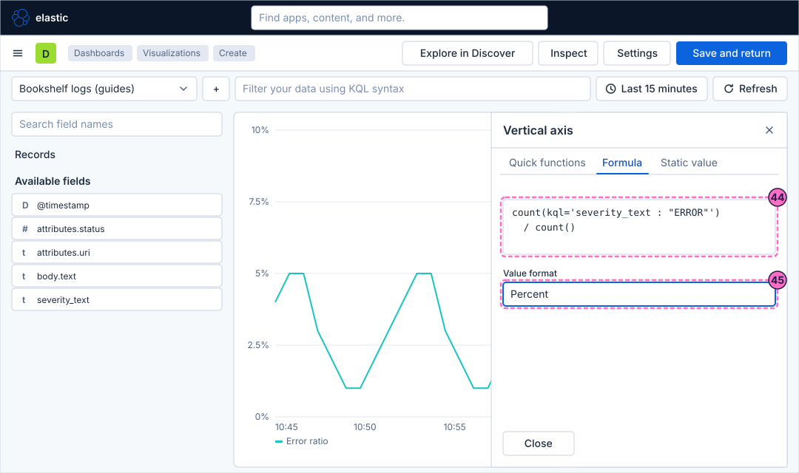
-
Set the Value format control to
Percent, so that the axis and the tooltip show5%instead of0.05. -
Type
Error ratioin the name control of the editor, so that the chart shows that label instead of the formula. -
For the week-over-week change, a second Vertical axis entry with this formula and the same value format draws how much the number of requests grew compared with the same time a week earlier. In the lab, use
10minstead of1w, because the lab has no week of data:count() / count(shift='1w') - 1 -
Close the editor and click Save and return.
-
Back on the dashboard, click Save in the second bar.
-
Click Exit edit.
Check the result
Open Dashboards and then Bookshelf (guides). It must show the lines of the requests per minute with the shifted copy and the reference line, the percentile of the latency, and the error ratio, which is
close to 0% in the normal mode.
To see the error ratio and the annotation react, force errors and press Refresh:
curl -X POST localhost:8090/mode/failingWithin about a minute the error ratio rises and the lines of the URIs change. Restore normal traffic afterwards:
curl -X POST localhost:8090/mode/normalVariations
-
Replace the percentile of the traces by the average or the maximum of the same field and compare the shapes.
-
Break the first panel down by
attributes.statusinstead ofattributes.urito see the share of the404responses over time.
What can go wrong
| Symptom | Cause | Fix |
|---|---|---|
The workspace says that no results were found |
The time picker covers Last 15 minutes and the load generator is stopped, or the lab started a moment ago. |
Widen the time picker to Last 1 hour, check the mode with |
The data view Bookshelf traces (guides) is not in the picker |
The data view was not created. |
Create it as described in Before you start, then reopen the editor. |
The shifted line is empty |
The time shift is longer than the data that Elasticsearch holds, or the time picker does not cover it. |
Use a shift shorter than the age of the lab data, such as |
The formula shows a red error |
A function name or a quote is mistyped, or the formula mixes a field of the logs with a data view of the traces. |
Retype the formula with the quotes as shown, and check that the data view of the layer is Bookshelf logs (guides). |
The error ratio stays at |
There are no log records with the severity |
Switch the load generator to its failing mode as in Check the result. |
Clean up
Keep the dashboard and the panels: the following guides in this series extend it. The data view Bookshelf traces (guides) can stay too; delete it in Stack Management under Data Views when you no longer need it.
Stopping the profile with docker compose --profile kibana down -v deletes the volumes and therefore all of them.
Where to go next
-
Previous guide: Create a dashboard and the first Lens panel.
-
Next guide: Metric, gauge and table, which shows single values and tables with the same data.
-
Reference: Lens covers the editor, its chart types and its functions in full.